Faster lines. Higher sales. Happier crowds.
Billfold is an RFID-powered payment ecosystem now used at large-scale festivals and stadiums worldwide.
I designed every touchpoint from scratch, from RFID wristband registration kiosks to vendor POS and guest-facing screens, to keep lines moving and payments effortless even when thousands of people ordered at once.
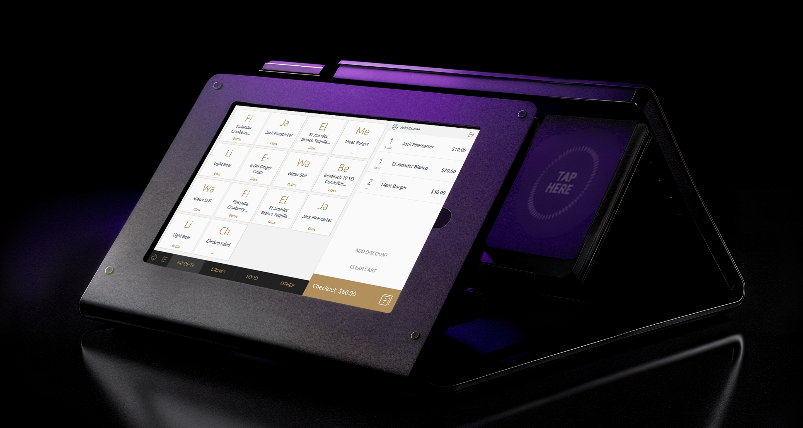
Overview
Billfold set out to solve one of the biggest frustrations in live events: slow, unreliable payments that created long lines and lost sales. Traditional card readers couldn't handle peak demand, transactions stalled, hardware failed, and both guests and vendors paid the price. Every minute in line was money not spent at the bar, merch booth, or food stand.
Overview
I designed a cashless payment ecosystem that cut those bottlenecks out of the experience. Using RFID wristbands, dual-screen POS devices, and rugged hardware built for crowds, we created a system that processed transactions in seconds, kept queues moving, and gave organizers real-time data across every vendor.


By removing payment bottlenecks, we achieved shorter waits, higher guest spending, and a smoother experience for everyone — from fans and staff to operators.
The Challenge
Designing for festivals and stadiums meant building a system that worked under extreme pressure. At peak times, thousands of guests ordered at once, and even a 2 second delay could ripple into minutes of waiting. Hardware had to survive weather, glare, and sticky hands, while staff with little training needed to serve quickly and without mistakes.
Guests were no easier: distracted, emotional, and often not fully sober, they gave only split-second attention to the screen. A single mis-tap could turn a $10 drink into a $100 charge, with no chance to explain mid-rush. Add failing networks, endless bar lines, and frustrated crowds, and every transaction carried the risk of slowing the whole event.
The challenge was clear: design a payment system that worked in chaos — fast enough to keep lines moving and reliable enough to protect revenue at every transaction.

My Part in This
I joined Billfold when there was no design team, no interface, and no real product, just a vision, a rough hardware prototype, and the urgency to move fast. From that starting point, my role was to transform a raw idea into something real, usable, and resilient enough for the chaos of live events.
For several years, I was the sole designer on the team, responsible for everything from early research and wireframes to polished prototypes and final UI. I created design systems, explored countless edge cases, and ensured consistency across hundreds of vendor- and guest-facing screens.
Designed everything from Russia while events happened in the US. I couldn’t just pop into a festival, so I relied on user videos, staff feedback, and constant iteration with engineers on-site.
Created flows, wireframes, and polished prototypes for both vendor and guest-facing tools.
Designed for sun glare, rushed taps, drunk users, hardware quirks, and unpredictable environments.
Partnered closely with founders and engineers to adapt quickly between live events.
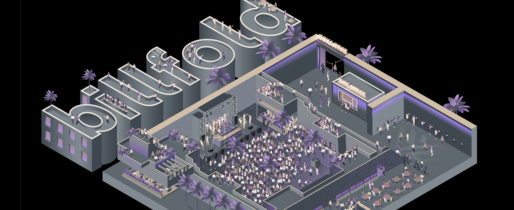
Research & Discovery
Since I couldn’t attend US festivals in person, research had to happen remotely. I worked closely with PMs, event staff, and engineers to understand how payments broke down during live events, and what vendors and guests struggled with the most. Feedback came from videos, on-site reports, and rapid loops between design and deployment.
This process helped me uncover the real conditions the product had to survive: sun glare on screens, beer-soaked hardware, distracted and impatient guests, and staff with minimal training. By combining remote insights with field feedback, I could translate messy realities into design principles the team could build on.
Analyzed staff videos and on-site recordings to see how devices performed during rush hours and where transactions failed.
Collected input from PMs, event organizers, and engineers after each live deployment to capture recurring pain points.
Broke down critical moments like bar rushes, entry bottlenecks, and late-night crowd surges to identify risks.
Studied how sun, glare, sticky hands, and loud settings shaped what people noticed (or missed) on the screen.
Transactions needed to complete in under two seconds to keep lines moving.
Distracted, emotional, or drunk, they missed instructions and made constant mistakes.
Temporary staff needed flows that were self-explanatory from the first tap.
Sun glare, spills, and poor connections constantly pushed the system to fail.
Every mis-tap or failed charge meant delays, complaints, and lost sales.
The Billfold Ecosystem
From guests trying to buy a drink, to bartenders rushing through hundreds of orders and organizers keeping the entire event under control, every part of the system had to work together in real time. The goal was to remove friction wherever it appeared.
That meant making payments effortless for guests, reducing stress and mistakes for staff, and giving organizers the visibility they never had before. By unifying these perspectives, Billfold turned a chaotic process into one seamless flow.

The tablet interface used by bartenders and cashiers. Designed to be ultra-fast and error-proof so staff with little training could serve hundreds of guests without slowing down.

A display facing the customer that shows the order, confirms payment instantly, reduces mistakes, and gives guests confidence that every tap went through.

A self-service station at the entrance where guests link their bank card to an RFID wristband. This one-time setup meant no wallets or phones needed inside the event, just tap and go.
Billfold wasn't just a single tool — it became an ecosystem designed to keep festivals running smoothly for everyone involved.

The Vendor Experience
The Vendor Experience
For bartenders and waiters, speed was everything.
At peak hours, a single extra tap or a confusing screen could slow the entire line and frustrate hundreds of guests. The vendor-facing POS had to be simple enough to learn in minutes and reliable enough to handle non-stop orders all night.
Designing for this reality meant focusing on clarity, error-prevention, and speed above all else. Every interaction was reduced to the essentials, giving staff confidence under pressure and keeping drinks flowing even in the busiest rush.
We used a hardware setup with two screens back-to-back (one facing staff, one facing guest). I crafted the UI so that each side showed only relevant information. This prevented accidental taps and made interactions clear for both parties.
The staff interface used large buttons and clear text. Bartenders working under pressure could quickly select items without slowing down or making mistakes.
The flow was reduced to two steps: select items and tap to pay. No unnecessary confirmations. Transactions averaged ~2 seconds.
The system continued working without internet, storing transactions locally and showing subtle warnings without interrupting service.
Refunds and voids were accessible but protected with confirmations to prevent mistakes or abuse.
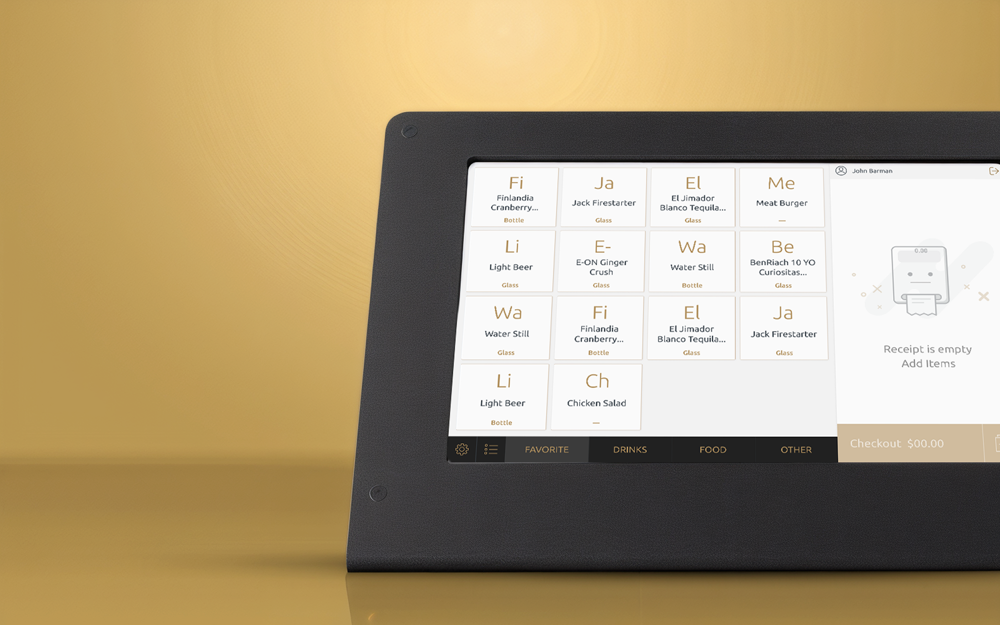
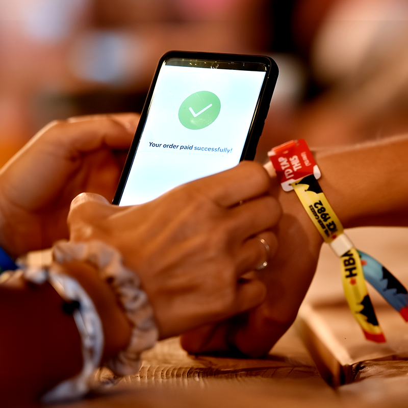
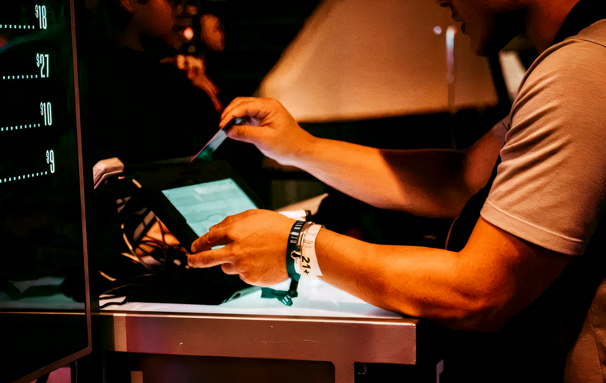
The Guest-Facing Screen
The Guest-Facing Screen
For guests, confidence was everything. In the middle of a noisy crowd, they needed to know their order was right and their payment went through, without second-guessing or asking staff. The customer-facing screen had to remove doubt in an environment where attention lasted only a second.
That meant showing the right information at the right time: clear totals, instant confirmation, and feedback that felt effortless. The goal was simple — make every tap trustworthy, so guests could spend less time worrying about payments and more time enjoying the event.
As each item was added, it appeared in real-time on the guest screen — e.g., “Beer ×2 – $12.” This gave guests a transparent, receipt-like view of their order and helped prevent confusion or disputes.
Once the order was ready, the screen showed a clear total and prompt: “Total $24. Tap wristband to pay.” After payment, it instantly confirmed with a big green checkmark.
If a tap failed (e.g., card declined), the screen showed clear, neutral messaging like “Card declined – try another card.” The goal was to resolve the moment without confusion or embarrassment — tone and clarity mattered as much as the UX flow.
During idle times, the screen could display sponsor promos or venue messages. I designed a banner area that appeared only when no transaction was in progress, and kept it visually quiet to avoid distracting from the main task flow.
After checkout, at select events, guests could choose to round up their total and donate spare change to charity. I’m proud that this design led to a surprisingly high opt-in rate – it turns out many people in a good mood at a festival are happy to donate their spare change if you make it one tap.

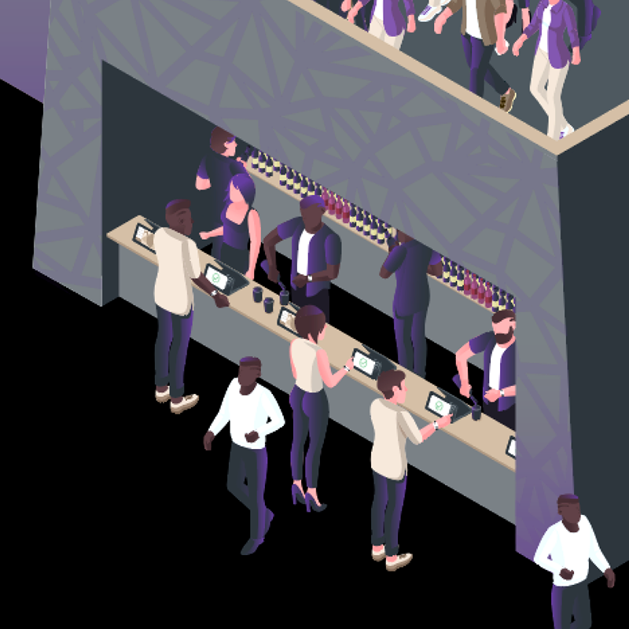
The Guest Journey: Check-In Kiosks
The Guest Journey: Check-In Kiosks
The first impression of any event happens at the gate. Guests arriving with excitement don't want to stand in another long line just to set up a wristband. The self-check-in kiosk had to make registration quick, intuitive, and foolproof, so thousands of people could flow through without bottlenecks.
The design challenge was to guide distracted guests through a one-time setup in under 20 sec. Clear instructions, simple steps, and instant feedback made it possible. Once their card was linked to the RFID wristband, guests could put wallets and phones away and just tap to pay.
I designed the flow to have as few steps as possible. Tap your wristband to start → Swipe or insert your credit card (or select Apple/Google Pay) → (Optional: enter your phone or email if you want a receipt) → Done — enjoy the event. It typically took less than a minute.
Each step included a progress indicator (“Step 2 of 3”) so users understood that the flow was quick and simple. We used clear visuals — such as an icon of a wristband being tapped or a credit card — to make the process intuitive at a glance. At the end, the confirmation screen told them their wristband was now their wallet. For added reassurance, if they entered contact info, we sent a confirmation text with a link.
These kiosks might be used in sunlight or at night by thousands of attendees, some of whom might not speak English well (especially at international events). We allowed users to choose their language at the start, and I ensured the UI used simple phrasing, large text, and universal icons.
Recognizing that check-in could become a bottleneck itself, we designed the system to support multiple kiosks and roaming staff with handheld versions. The software was identical across both. My flows had to account for someone starting at a kiosk and possibly finishing with staff assistance.
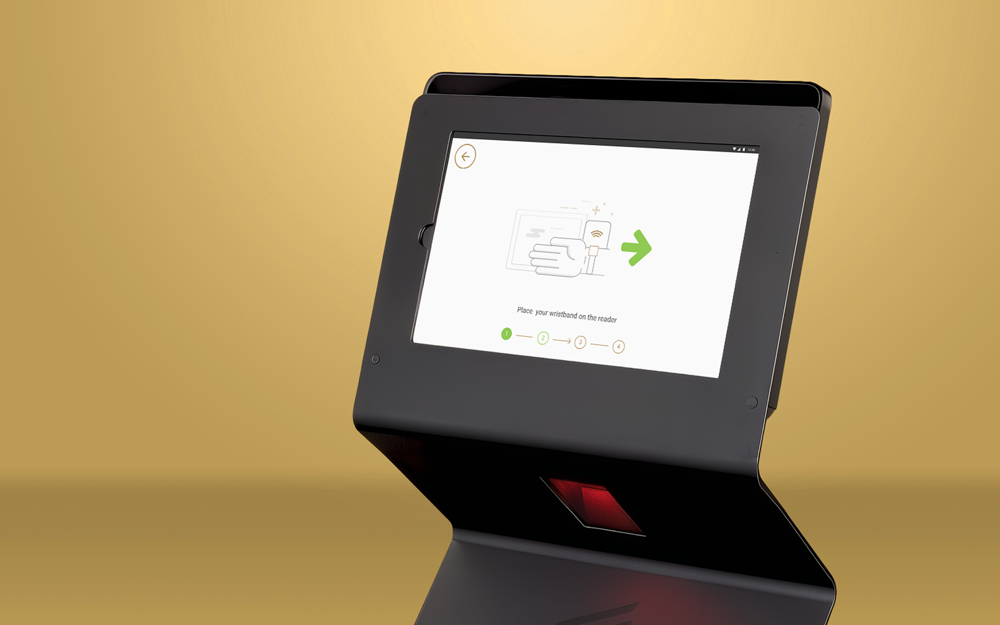
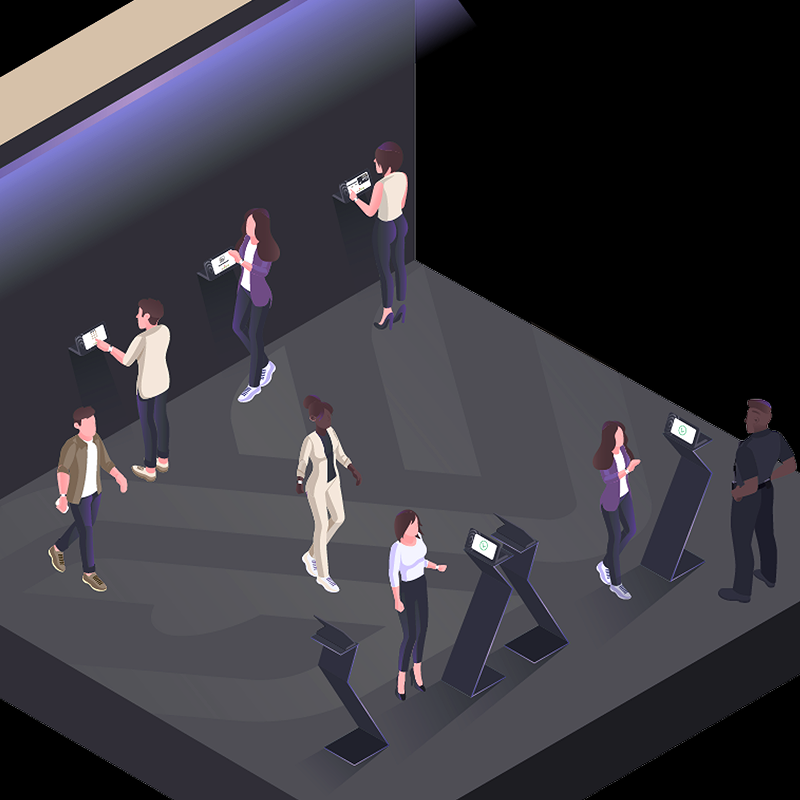
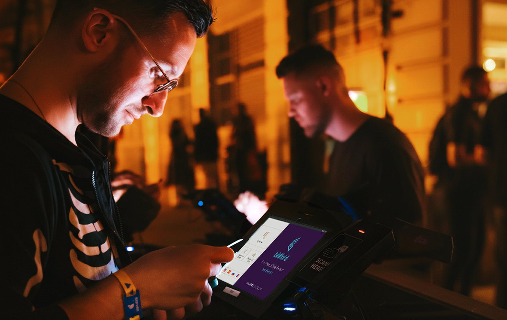
Results in the Real World
Results in the Real World
Billfold grew from a fragile prototype into the payment backbone of major festivals and stadiums, built to handle the moments when thousands of guests order at once. Even under peak demand, transactions cleared in under 2 seconds, and sales continued seamlessly through network drops thanks to offline resilience. Bartenders finally could focus on serving and guests on enjoying the night.
The business impact was undeniable: guests spent up to 60% more, transactions increased by 23%, and organizers reported double-digit revenue growth after switching to Billfold. Tips doubled, queues shrank, and vendors finally had a system they could trust under pressure. Today, it’s still running at large events worldwide, a direct result of design choices made to balance speed, clarity, and resilience.
Transactions that once took ~1 minute on credit card readers were cut to under 2 seconds with RFID wristbands. At peak hours, bartenders could process more than 200 orders per hour, shrinking bar lines and keeping guests in the show instead of stuck in queues.
Guests no longer worried about wallets, phones, or failed card swipes. Clear on-screen confirmations made every tap trustworthy. This simplicity drove behavior change: per-person spend rose by 60% at some venues, and RFID users spent over 2× more than card users at large festivals.
For staff, the POS became a tool they could learn in minutes. Error-proof buttons, minimal steps, and offline fail-safes kept service flowing even in chaos. Bartenders not only served faster but also saw their tips double on average, since seamless payments let guests tip without friction.
Removing bottlenecks directly impacted the bottom line. Events using Billfold reported up to 79% higher total revenue, driven by faster throughput, more transactions, and increased per-guest spend.
Even when Wi-Fi crashed, Billfold didn’t. POS devices cached transactions locally and synced when back online, ensuring 99% offline success. For organizers, this reliability meant no sales lost during network failures — and real-time dashboards finally gave visibility across every vendor and location.
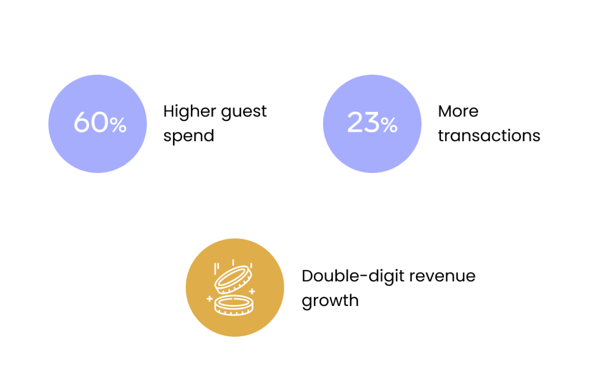
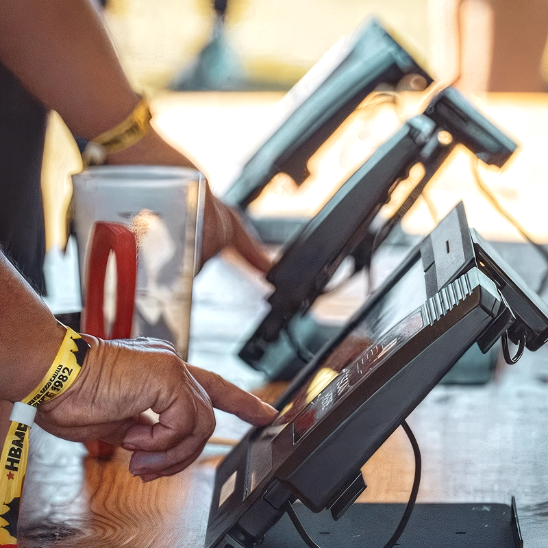
Billfold proved that when payments run smoothly, everything else follows: faster lines, calmer staff, and happier guests.

Reflections & Growth
Billfold pushed me to design for real-world chaos, not polished screens. Working remotely and solo, I had to move fast, trust my decisions, and make them work for bartenders with 30-second training and guests who barely looked at the UI.
What mattered most were the small wins: one clearer total, one fewer tap, one steadier flow, and lines shrank, staff exhaled, sales climbed. It proved to me that the best design shows its value under pressure, where clarity makes the biggest difference.
Because I couldn't be on-site, I had to adapt my research approach, relying on staff videos, real-time feedback loops, and rapid iterations with engineers in the field.
It wasn't always perfect, but it taught me to stay curious, flexible, and resourceful.
At the same time, working as the only designer in a startup pushed me to grow in resilience and autonomy: trusting my instincts, making fast decisions, and defending them to a cross-functional team that needed results, not just polished screens.
I got a crash course in designing hardware and software together, aligning screen logic with RFID behavior, and understanding how even a 1-second delay could break trust.
That experience pushed me to think less about individual screens and more about the system as a whole: how devices, flows, and infrastructure connect to shape the user experience.
I saw first-hand how UX drives business metrics.
Faster flows and clearer screens didn't just feel better, they increased revenue, enabled tens of thousands of extra transactions, and gave venues confidence in a system they could rely on.
Design wasn't decoration here, it was directly tied to dollars, scale, and trust.
When design removes friction, everyone wins: staff feel supported, guests stay engaged, and the business sees the difference in the numbers.